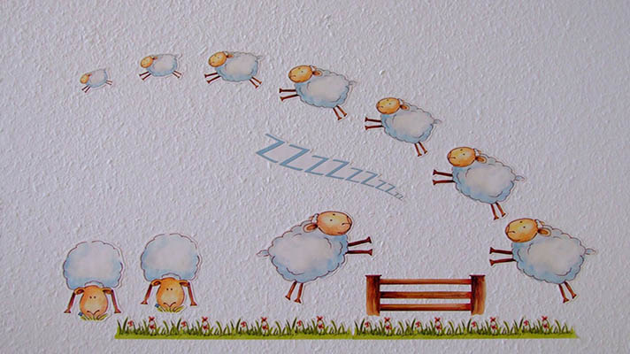

“一只羊，两只羊......”你已经数乱了，却还睡不着。看来数羊大法已经对你不奏效了，何不试试睡前来杯红酒呢？
红酒之所以能够治疗失眠主要归功于其成分——葡萄。曾有意大利科学家公布，葡萄汁中可能含有睡眠辅助激素——褪黑素。它具有调节睡眠周期、治疗失眠的作用。
除了褪黑素的作用，葡萄中的营养成分在预防和治疗神经衰弱、胃痛腹胀、心血管疾病等方面都有较显着的疗效，这些特点能够致使其成为间接缓解失眠的食物。
【小贴士】
红酒虽好可助眠，客官您千万不要贪杯哦~
任务详情：添加任务后，365日历会为您添加日程，每天固定时间提醒您喝红酒。您可以自己设置提醒时间。